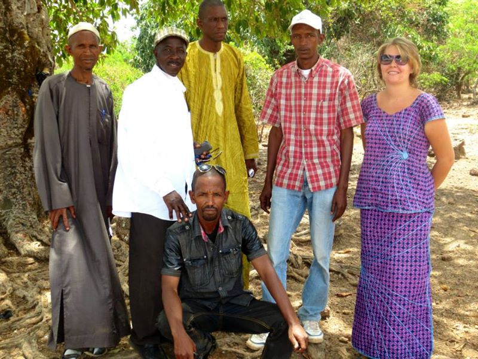

About
I grew up in Washington state, in the Pacific Northwest, and I've spent my career trying to make government work better for the people who depend on it.
That started in the Peace Corps, in Guinea, West Africa, where I first learned to build programs around what communities actually needed rather than what looked good on paper. I brought that same instinct into a decade at 18F and GSA — first shaping how agencies buy digital services, then running delivery on some of the federal government's highest-stakes technology work, including IRS Direct File, the first tax filing system built and run by the IRS.

In Korbé, trust wasn't something I earned in one meeting — it was built by showing up, again and again: learning enough Pular to greet people properly, sitting through meetings that started an hour late because that was how things actually worked, not how I expected them to. I learned to stop assuming I already knew what a community needed until I'd spent real time listening to people say so themselves. That's the same discipline I still bring to government and public-interest work now: show up consistently, build trust before proposing solutions, and say plainly when something isn't working instead of quietly moving on.
Since then I've led delivery for a Native-owned tribal health IT consultancy and a civic tech firm doing nonprofit research and strategy work — different clients, same throughline: the work only counts if it ships, gets adopted, and holds up after I leave.
I live in Washington, D.C. now, with my husband and two cats.
Experience
18F, General Services Administration (GSA)
- Scoped digital service consulting engagements across multiple agencies; delivering digital transformation projects that improved critical public services.
- Led and partnered with agency executives to develop roadmaps for policy implementation, ensuring operational feasibility while balancing implementation constraints and user needs with stakeholder priorities.
- Directed cross-functional Agile/SAFe teams across concurrent digital initiatives, ensuring delivery visibility, proactive risk management, and on-time execution of critical milestones.
- Integrated human-centered design and behavioral insights to improve adoption of new services, particularly for underserved communities.
- Scoped and scaled multi-million-dollar digital transformation initiatives; managed $10M portfolios with on-time, in-scope delivery across complex vendor landscapes.
18F on behalf of the IRS
- Collaborated to launch the first-ever tax filing system built and run by the IRS, serving 140,000 users in pilot year, increasing trust in the IRS by over 80% in a survey of users.
- Oversaw program risk mitigation, stakeholder communications, and root cause analysis to resolve critical delivery issues.
- Led delivery strategy for the customer support team aligning product goals across two software products and 7 product teams.
- Ensured dignified, accessible user experience through iterative testing, stakeholder feedback, and service design integration.
Office of Evaluation Sciences, GSA
- Developed, launched, and implemented a new financial sustainability model based on an examination of five years of salary history to ensure financial stability.
- Recommended process improvements to senior leadership regarding the financial stability, effectiveness, and efficiency of administrative procedures.
18F, General Services Administration (GSA)
- Assisted with the acquisition of digital services during the procurement lifecycle. Led Request for Quote (RFQ) ghostwriting efforts.
- Helped partner agencies shape their acquisition documents to reflect leading industry practices in digital services.
Peace Corps — Guinea, West Africa
- Applied human-centered needs assessments to align government and NGO priorities with community needs, ensuring equitable and sustainable program outcomes.
- Partnered with local NGOs to deliver community programs: securing and distributing 400+ pairs of shoes for a Double Dutch initiative and 450 books for a new community library.
Education & Training
Gonzaga University
Bachelor of Arts, International Relations
Minors: Political Science and Spanish
Study abroad: Cuernavaca, Mexico
Awards
- GSA's 2024 Customer Experience Award for contributions to IRS Direct File
Certifications
- Certified Scrum Master (CSM) — 2021
- Certified Scrum Product Owner (CSPO) — 2016
- Flawless Consulting — Designed Learning, 2019
- Cooper Professional Education — Design Research & Service Design, 2018
- The Management Center — Managing for Racial Equity, 2018
- General Assembly — Front-End Web Development, 2017